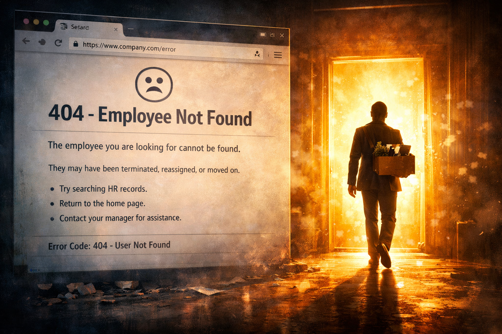
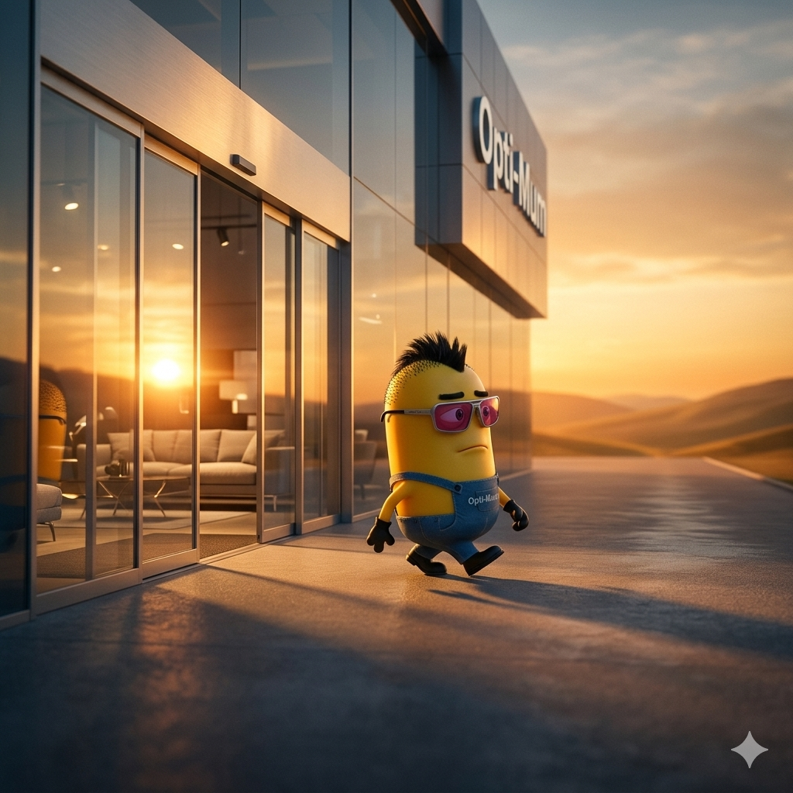

Nach 3 Jahren, unzähligen Deployments, einer ungesunden Beziehung zu Magento und einem noch ungesünderen Verbrauch von allem was Alkohol hat 🍻😅 - ist es Zeit. Ich gehe. Und ich habe den Ausgang selbst gefunden. 👉✨
Es fing klein an. Azubi, frisch dabei, keine Ahnung was Magento ist - und schon gar nicht, warum es manchmal einfach nicht will. 🤦 Aber man wächst rein. Oder daran. Beides trifft zu.
Das Büro brennt 🔥, der Teamchat explodiert 💥, irgendein Import aus MHS macht wieder was er will - und ich tippe ruhig meinen letzten Befehl. Lehne mich zurück. Lasse es geschehen. 😬
3 Jahre lang war ich derjenige, der wusste warum das Feld in Magento keine Sonderzeichen mag - und wer dafür verantwortlich ist, dass es trotzdem welche enthält. 😏 Das ist jetzt euer Problem. 👋

Ich existiere nicht mehr unter dieser URL. 🌏 Ich habe den Ausgang gefunden - und zwar nicht den, durch den man seit Jahren im Kreis läuft, sondern den echten. 🚪✨
Falls ihr versucht mich anzurufen 📞: ich habe wahrscheinlich kein Ticket dazu. Und Teams ist deinstalliert. 🗑😂

Sonnenbrille auf 😎. Schritttempo erhöht 🚶. Tür auf - raus 🚪.
OptiMum wusste schon immer, wann der richtige Moment ist. Und der ist jetzt. ⏱✨
Drei Jahre lang habe ich das Möbelhaus nach außen repräsentiert, während er es von innen am Laufen gehalten hat. 💻
Eine gute Arbeitsteilung. Eine starke Zeit. 💪
OptiMum bleibt. 🏠
Ich gehe. 👋
Mit Stil. Mit Dankbarkeit. Und genau im richtigen Moment. 🍻🌅
"Haben wir das mal dokumentiert?" 📄
- Ich, vermutlich nie3 Jahre opti WOHNWELT. Das sind ungefähr 780 Arbeitstage 📅, schätzungsweise 3.000 Tassen Kakaotraum ☕😍 und mindestens ein Dutzend Momente, in denen ich mir gedacht habe: Das kann doch nicht sein. 🤦
Meistens hatte ich recht. Und meistens haben wir es trotzdem hingekriegt. 💪
Es war eine wilde, lehrreiche, manchmal irrsinnige Zeit - und ich würde sie nicht missen. 💕 Auf die nächste Runde. Mit einem verdienten Drink in der Hand. 🍻
Chris // opti WOHNWELT E-Commerce // 2023 - 2026